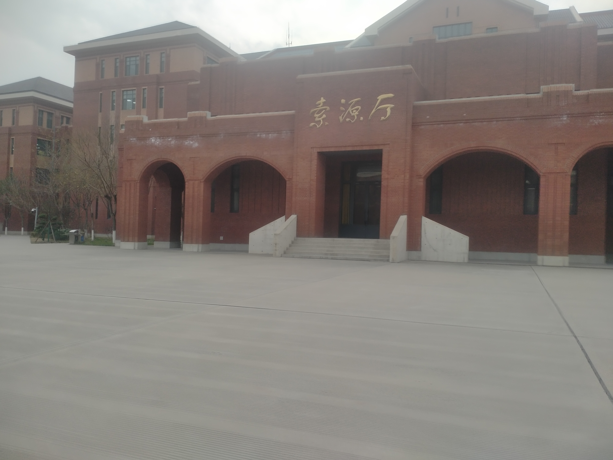

🎯
Objectif
Devenir un développeur et technicien IT capable de créer des solutions professionnelles et fiables.
Je suis étudiant en L3 Informatique et Technologies de l’Information à l’École Supérieure Polytechnique d’Antananarivo, avec une formation technique en IT au Tianjin Vocational College of Mechanical and Electricity en Chine. Motivé, sérieux et passionné par le développement web, la data science, les réseaux, le cloud computing et l’administration système Linux.
2023 — Base académique scientifique.
École Supérieure Polytechnique d’Antananarivo.
Tianjin Vocational College of Mechanical and Electricity — Certificat de fin de formation.
Des interfaces élégantes, des dashboards, des systèmes pratiques, des projets réseau, des solutions web utiles et des analyses de données visuelles.

Devenir un développeur et technicien IT capable de créer des solutions professionnelles et fiables.
Sérieux, organisé, orienté apprentissage continu, et focus sur la qualité du rendu.
Allier développement web, data et réseaux pour créer des projets utiles et modernes.